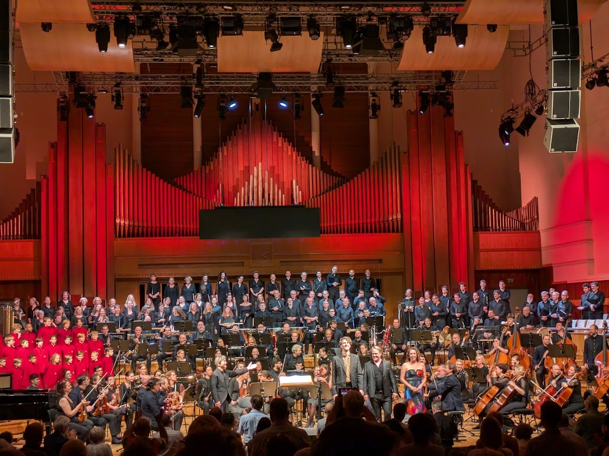
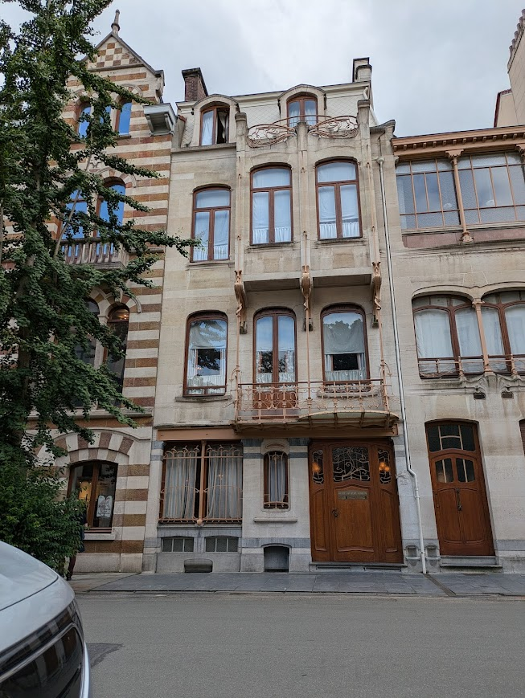
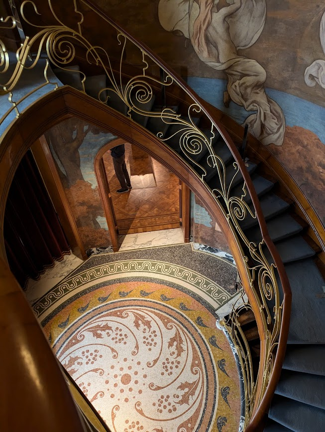
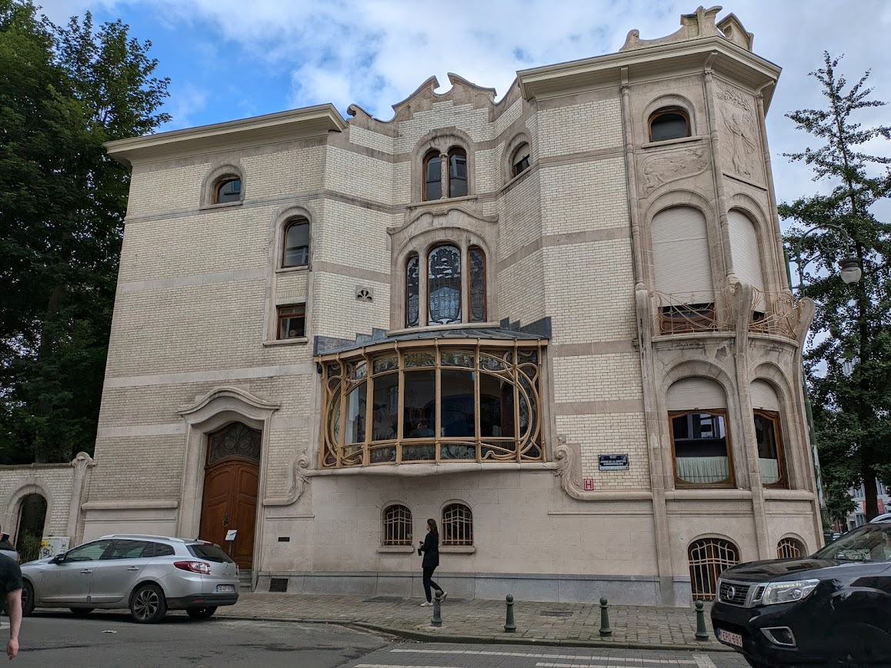
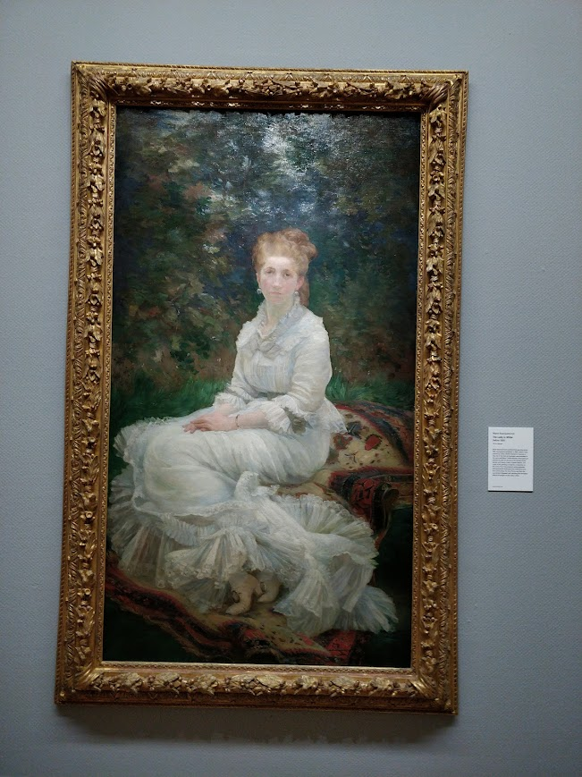
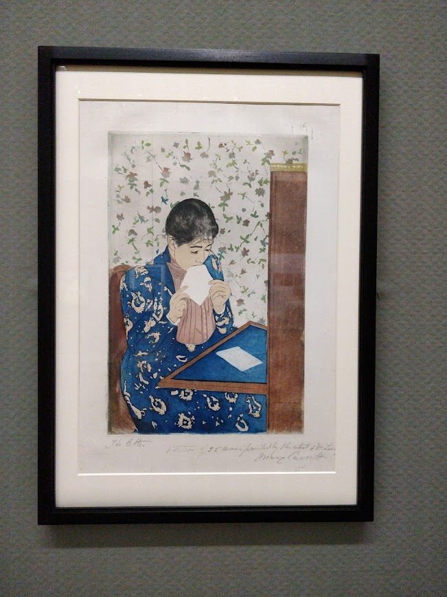

Brussels Philharmonic, Vlaams Radiokoor

Opening and closing with the epic ‘O Fortuna’ performed by three choirs and a full orchestra
O Fortuna
velut luna
statu variabilis,
semper crescis
aut decrescis;
O Fortune,
like the moon
you are changeable,
ever waxing
ever waning;
Orff based the text on [Carmina Burana], a collection of poems and texts from the 11th and 12th centuries.
There was a talk with one of the choir directors before the show ( in English ) who mentioned they made an effort to pronounce german latin sounds rather than the more familiar ‘italian latin’.
In the lobby after the concert there was a ‘wheel of fortune’ you could spin to try and win a prize.
Exceptional examples of Art Nouveau architecture in Brussels, less than 10 minutes walk from each other.

Photographs were not permitted in the Horta house and we had to leave phones and cameras in a locker at reception. It is possible to take pictures if you organise prior approval apparently.
Hannon house had wonderful staff, very helpful. They gave us a booklet which cost 2 euros but said ‘Just give it back when you leave and you won’t have to pay anything’

Beautiful house and lovely experience

In 1882 when Morisot was in Nice, she wrote to Eugene at home in Paris asking him to select her submissions for the seventh Impressionist exhibition. She was astonished to learn that he included this painting, which was not one of her immediate choices.

Marie Bracquemond
Her meticulous technique meant that her painting process was time-consuming and her oeuvre realtively small. Bracquemond mostly worked at home in Sevres, using her sister, Louise, as her model.

Mary Cassatt
Wealthy, independent and single, Cassatt lived a long and productive life. Throughout her career, Cassatt was actively involved in supporting women’s rights, education and suffrage.